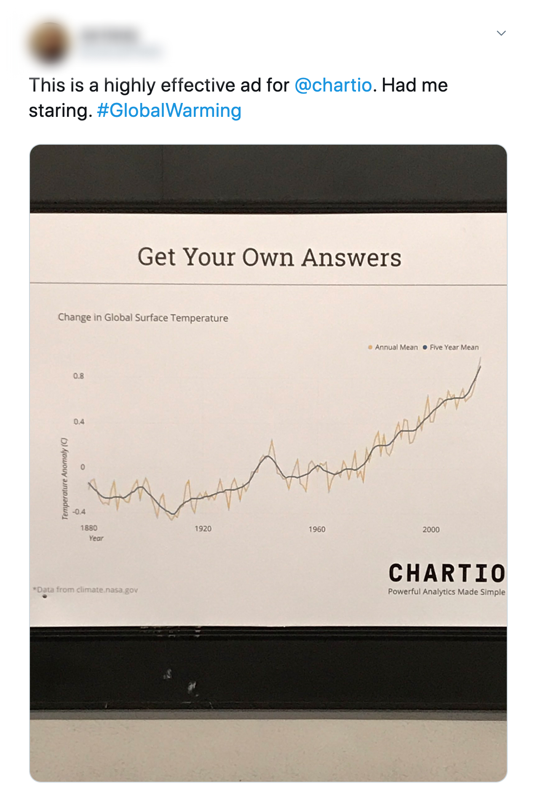

Chartio, a data visualization platform, had never really considered a subway ad. In September of 2017 though they saw an opportunity to not just advertise the business, but also recruit local talent by taking over the BART station closest to the downtown SF office.
Chartio BART station takeover

The turnaround time for the whole project was tight, but I was able to win the team over with an idea for the ads I felt confident I could execute in time.
 An earlier idea where some of the ads would be almost blank, highlighting the importance of monitoring the right things at the right time.
An earlier idea where some of the ads would be almost blank, highlighting the importance of monitoring the right things at the right time.
 The final idea, pairing photos of people asking questions with real, charted answers.
The final idea, pairing photos of people asking questions with real, charted answers.
The idea took advantage of the ad boards being grouped in pairs, and would combine a photo of a person (Chartio employee) pondering a question in the left panel, with a data visualization answering their question in the right panel.My logic was even if commuters did’t read any of the ads, they would see people pondering while looking at charts with the Chartio logo under them.
 The final ads in the station.
The final ads in the station.
 Though it would have been fun to feature customers in our ads, the short timeline meant I had to get employee volunteers for the photos.
Though it would have been fun to feature customers in our ads, the short timeline meant I had to get employee volunteers for the photos.

 Even I ended up in one of them.
Even I ended up in one of them.
It was also important to me that we come up with charts that used real data, ideally on local topics, so the people using the same station for their daily commutes could actually study the data and hopefully, find something interesting.
 Final ads in the station.
Final ads in the station.


A reaction to the ads on twitter.

Thanks for taking a look. Reach out anytime. I hope you’re having a nice day :)